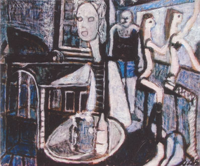
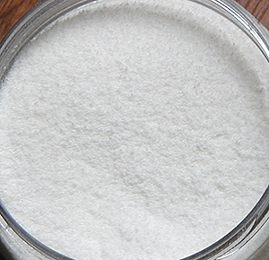

La
gouache

Etymologie :
voir Détrempe
Les premières versions modernes de cette peinture
sont apparues vers le début du siècle dernier. Cela ne signifie pas qu'il
n'existait pas d'autres formes de gouaches antérieurement.
Cependant, on entend aujourd'hui par le mot gouache plus spécifiquement qu'hier une peinture à l'eau
couvrante.
Raoul Dufy et quelques autres jusqu'à l'époque
actuelle ont donné à la gouache contemporaine les lettres de noblesse que sa réputation de "peinture
scolaire" ne lui confère pas a priori.
Nous avons choisi en illustration ci-contre un
tableau un peu osé, "Les infirmières de l'âme", par Yvon
le Bars (gouache sur papier marouflé sur toile), afin de contredire cette
opinion encore très répandue. Cependant, cette réputation n'est pas sans
fondement dans la réalité pratique et l'on peut à ce sujet lire directement notre
conclusion temporaire avant de poursuivre.
D'autres peintures comparables, plus anciennes (Moyen-âge) sont
parfois référencées en tant que "gouaches médiévales" comme la caséine
et certaines encres. Aucune n'associait opacité, temps de séchage rapide et
simplicité d'emploi.
On comprend donc en quoi la gouache d'aujourd'hui est un pur produit du
modernisme, de ses expérimentations multiples, de ses exigences de rapidité et
d'efficacité.
Elle était initialement une aquarelle à
laquelle on avait adjoint du blanc de
lithopone ou bien du blanc de zinc
pur, ou encore du talc, du kaolin ou
aussi bien une marne quelconque, pour la rendre
si ce n'est couvrante, du moins épaisse et assez opaque, en conservant une certaine
luminosité.
Aujourd'hui, devant la diversité des produits qui nous sont proposés sous
l'intitulé de gouaches, il est devenu difficile de savoir à quel procédé de
fabrication, à quelle composition précise nous avons affaire.

Le liant méthylcellulosique aurait
été le plus utilisé. Certains fabricants l'ont même évoqué comme liant "traditionnel" de la gouache,
ce qui est moins que jamais une information confirmée. Ce liant est
disponible dans le commerce à l'état pulvérulent, beau comme une neige
fraîche (voir photo ci-contre), et doit être adjoint, pour pouvoir être mêlé
aux pigments, à de l'eau distillée et éventuellement à un agent conservateur.
La glycérine serait
souvent employée par les fabricants comme assouplissant et/ou comme retardateur de
séchage.
[Ajout juillet 2011]
Avec l'ouverture des marchés et la multiplication des
sous-traitances qui en a résulté dans les années 2000 en particulier, les moyens de contrôle des produits sont-ils
encore appropriés, y compris pour les commanditaires, face aux flux
concernés ? Pouvons-nous encore affirmer que la gouache est plutôt faite de ceci
que de cela ? Non c'est un fait. Nous ne pouvons plus
prétendre que la gouache
est en général faite de méthylcellulose comme nous le faisions
antérieurement. On ne sait strictement plus ce que c'est. Comme les industriels
continuent à rechigner à communiquer - si tant est qu'ils soient en mesure de le
faire -, il ne reste au consommateur que le nom d'un fabricant ou d'une gamme de
produits pour accorder telle ou telle confiance à un telle peinture nommée
gouache.
[Fin de l'ajout]
Il est excessif d'affirmer que toutes les gouaches se prêtent surtout aux aplats
: certaines gouaches dites "gouaches techniques" sont effectivement
destinées à cet emploi, mais pas les extra-fines. Il existe d'ailleurs d'autres
grandes différences entre les gammes de produits. On notera particulièrement
l'étendue incroyable de certaines gammes de couleurs extra-fines,
comparativement aux autres séries et même comparativement à d'autres procédés de
peinture. A ce titre, elles peuvent être utilisées pour découvrir ou faire
découvrir les caractéristiques de la plupart des pigments en peinture à l'eau.
La gouache contemporaine ne permet aucun
empâtement, contrairement à l'acrylique : des craquelures se forment au
séchage. L'emploi éventuel et non confirmé de liant méthylcellulosique,
par ailleurs paradoxalement agent épaississant lorsqu'elle est
employée avec d'autres
liants, ne suffit pas à faire de la gouache pure une peinture pour les reliefs.
La gouache peinte est théoriquement réversible.
Son diluant est l'eau (si possible distillée ou au
moins déminéralisée).
Son seul médium vraiment reconnu est le fiel de boeuf.
Les particularités de ce produit ne l'apparentent pas, cependant, aux médiums
habituels des autres procédés, le fiel étant surtout employé pour permettre
un bon accrochage sur supports lisses.
Protection des gouaches
: vernis spéciaux pour gouaches. C'est vrai :
le beau
velouté de vos travaux a besoin de protection. Cependant, le vernissage des
gouaches peut être très
problématique. Nous avons recueilli plusieurs témoignages de vernissages
catastrophiques, ce qui se comprend dans la mesure où cette peinture est réversible
et sa composition, très variable.
Si la peinture "reprend" ou réagit chimiquement, le tableau est détruit, quel que soit le
mode d'application du vernis : soufflette, aérosol ou pinceau. Un essai
préalable sur un échantillon est fortement conseillé.
Conclusion temporaire
Comme la réponse au courrier d'un lecteur le suggère (lien),
la gouache et les produits associés posent plus que jamais un problème de
fiabilité et de confiance car on finit par ne plus rien savoir des produits en
présence.
Pour un adulte qui désire utiliser une gouache saine et de qualité raisonnable,
la solution pourrait consister à employer l'équivalent des gouaches médiévales,
par exemple une caséine soluble
et à effectuer soi-même le liage. Pour les enfants, il existe des dextrines et
des gélatines mais attention : en aucun cas
la question du pigment ne peut être résolue dans le cadre d'une fabrication
personnelle ou isolée. Dit autrement, il faut acheter un produit dans le
commerce et veiller à sa composition.
Enfin nous suggérons aux détaillants et aux commanditaires publics et privés
de
ne pas négliger les petites entreprises fabricant de bonnes peintures à la
caséine (ou autres, notamment les peintures pour enfants) prêtes à l'emploi.
Certains chefs d'entreprises et/ou consultants sont des experts internationaux
reconnus. Ils n'attendent que vous pour lancer des productions d'ampleur offrant
des garanties de sécurité et de qualité autrement plus sérieuses que celles qui
sont disponibles actuellement.
Retour
début de page